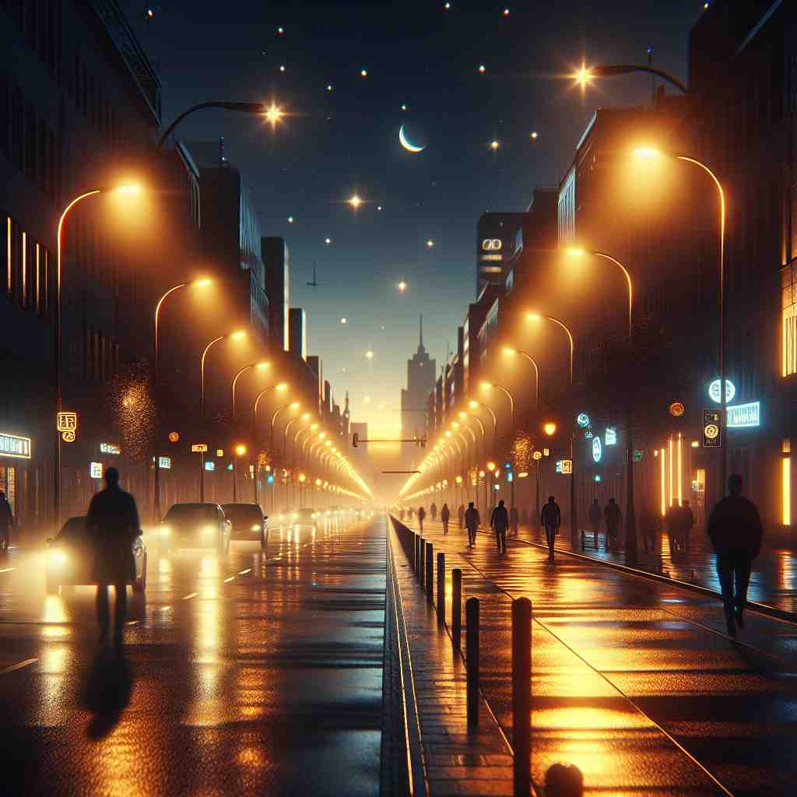

💬 Let's go outside and enjoy the night under the stars. 我们去外面，在星空下享受夜晚吧。

💬 The children say good night before going to sleep. 孩子们在睡觉前说晚安。
💬 Let's go outside and enjoy the night under the stars. 我们去外面，在星空下享受夜晚吧。
💬 The children say good night before going to sleep. 孩子们在睡觉前说晚安。
🔈 [naɪt]
💬 The stars shine brightly at night. 星星在夜里闪耀明亮。
🔍 夜里: 太阳下山后，天黑了，看不到太阳，这就是“夜里”。你睡觉的时候，通常就是“夜里”。
💬 Owls hunt at night. 猫头鹰在夜里捕猎。
🔍 夜里: 猫头鹰在白天睡觉，太阳下山，天黑了之后出来活动，这就是“夜里”。就像有些小朋友喜欢在白天玩，有些小朋友喜欢在天黑后玩捉迷藏。
💬 The city lights twinkle at night. 城市的灯光在夜里闪烁。
🔍 夜里: 白天，城市的灯光不明显，到了太阳下山，天黑以后，城市的灯光就变得很亮很漂亮，这就是“夜里”。就像你的玩具小夜灯，白天不开，晚上天黑了才打开。
🧠 “night” 的核心意思是太阳下山后，天黑的时间段。
⬅️ evening（傍晚）: “evening” 指的是从傍晚到晚上睡觉的这段时间, 是“night” 的一部分。
🔀 day（白天）: “day” 指的是太阳升起后，天亮的时间段，与 “night” 相反。
🌳 核心词根是来自古英语的 “niht”，表示夜晚，没有额外的前缀或后缀。
💡 可以联想 ‘night’ 为一天的黑暗时间段，与 ‘day’ 对比记忆。
🗝️ n. the period of darkness in a day 一天中的黑暗时段
🎭 在繁忙的都市里，华灯初上，天空由蓝转为墨黑。街道上车水马龙，霓虹灯闪烁，为夜晚增添了几分活力。这个黑暗时段是一天中的'night'，带来休息和安宁。
💬 We couldn't see anything in the night. 我们在夜晚什么也看不见。
🤔 强调黑暗这一特征
🗝️ n. the evening or night of a particular day when a special event happens 在某个特殊事件发生的当天晚上或夜晚
🎭 在一个热闹的宴会上，人们举杯庆祝新年即将来临。五彩缤纷的烟火在夜空中绽放，大家都沉浸在这个特别的'night'所带来的快乐和欢乐中。
💬 New Year's Eve is a night of celebration. 除夕是一个庆祝的夜晚。
🤔 特指某个晚上发生的事
🗝️ n. nightfall; darkness 夜幕降临；黑暗
🎭 在一个孤独的海岸边，太阳消失在地平线下，天色迅速暗下来。海浪拍打着岸边，夜幕降临，黑暗无限延展，这就是'nightfall'带来的深邃而静谧的时刻。
💬 Night was falling as we reached the campsite. 夜幕降临时，我们到达了营地。
🤔 夜晚来临的时刻
🗝️ n. a period or unit of nighttime 夜间的一个时期或单位
🎭 在一间旅馆的接待处，前台询问住客计划住几晚。旅客回答说需要住三'nights'，每个夜晚都是独立的夜晚，提供休息和恢复的机会。
💬 We stayed in Paris for three nights. 我们在巴黎停留了三晚。
🤔 作为时间单位
🗝️ n. the quality or state of darkness 黑暗的质量或状态
🎭 在一片浓密的森林中，树影婆娑，黑暗笼罩。即使是最微弱的光线也无法穿透，这种极致的黑暗就是'night'所具有的深幽状态，让人感受到夜的神秘与宁静。
💬 The night of ignorance was finally lifted by education. 无知的夜晚终于被教育扫清。
🤔 比喻性用法，表示黑暗状态